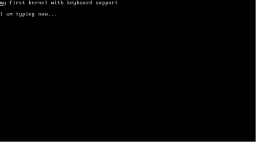

Kernels 201 -
Let’s write a Kernel with keyboard and screen support
In my previous article Kernels 101 - Let’s write a Kernel,
I wrote how we can build a rudimentary x86 kernel that boots up using GRUB,
runs in protected mode and prints a string on the screen.
Today, we will extend that kernel to include keyboard driver that can read the characters a-z and 0-9 from the keyboard and print them on screen.
Source code used for this article is available at my Github repository - mkeykernel
We communicate with I/O devices using I/O ports. These ports are just specific address on the x86’s I/O bus, nothing more. The read/write operations from these ports are accomplished using specific instructions built into the processor.
Reading from and Writing to ports
read_port:
mov edx, [esp + 4]
in al, dx
ret
write_port:
mov edx, [esp + 4]
mov al, [esp + 4 + 4]
out dx, al
ret
I/O ports are accessed using the in and out instructions that are part of the x86 instruction set.
In read_port, the port number is taken as argument. When compiler calls your function, it pushes all its arguments onto the stack. The argument is copied to the register edx using the stack pointer. The register dx is the lower 16 bits of edx. The in instruction here reads the port whose number is given by dx and puts the result in al. Register al is the lower 8 bits of eax. If you remember your college lessons, function return values are received through the eax register. Thus read_port lets us read I/O ports.
write_port is very similar. Here we take 2 arguments: port number and the data to be written. The out instruction writes the data to the port.
Interrupts
Now, before we go ahead with writing any device driver; we need to understand how the processor gets to know that the device has performed an event.
The easiest solution is polling - to keep checking the status of the device forever. This, for obvious reasons is not efficient and practical. This is where interrupts come into the picture. An interrupt is a signal sent to the processor by the hardware or software indicating an event. With interrupts, we can avoid polling and act only when the specific interrupt we are interested in is triggered.
A device or a chip called Programmable Interrupt Controller (PIC) is responsible for x86 being an interrupt driven architecture. It manages hardware interrupts and sends them to the appropriate system interrupt.
When certain actions are performed on a hardware device, it sends a pulse called Interrupt Request (IRQ) along its specific interrupt line to the PIC chip. The PIC then translates the received IRQ into a system interrupt, and sends a message to interrupt the CPU from whatever it is doing. It is then the kernel’s job to handle these interrupts.
Without a PIC, we would have to poll all the devices in the system to see if an event has occurred in any of them.
Let’s take the case of a keyboard. The keyboard works through the I/O ports 0x60 and 0x64. Port 0x60 gives the data (pressed key) and port 0x64 gives the status. However, you have to know exactly when to read these ports.
Interrupts come quite handy here. When a key is pressed, the keyboard gives a signal to the PIC along its interrupt line IRQ1. The PIC has an offset value stored during initialization of the PIC. It adds the input line number to this offset to form the Interrupt number. Then the processor looks up a certain data structure called the Interrupt Descriptor Table (IDT) to give the interrupt handler address corresponding to the interrupt number.
Code at this address is then run, which handles the event.
Setting up the IDT
struct IDT_entry{
unsigned short int offset_lowerbits;
unsigned short int selector;
unsigned char zero;
unsigned char type_attr;
unsigned short int offset_higherbits;
};
struct IDT_entry IDT[IDT_SIZE];
void idt_init(void)
{
unsigned long keyboard_address;
unsigned long idt_address;
unsigned long idt_ptr[2];
/* populate IDT entry of keyboard's interrupt */
keyboard_address = (unsigned long)keyboard_handler;
IDT[0x21].offset_lowerbits = keyboard_address & 0xffff;
IDT[0x21].selector = 0x08; /* KERNEL_CODE_SEGMENT_OFFSET */
IDT[0x21].zero = 0;
IDT[0x21].type_attr = 0x8e; /* INTERRUPT_GATE */
IDT[0x21].offset_higherbits = (keyboard_address & 0xffff0000) >> 16;
/* Ports
* PIC1 PIC2
*Command 0x20 0xA0
*Data 0x21 0xA1
*/
/* ICW1 - begin initialization */
write_port(0x20 , 0x11);
write_port(0xA0 , 0x11);
/* ICW2 - remap offset address of IDT */
/*
* In x86 protected mode, we have to remap the PICs beyond 0x20 because
* Intel have designated the first 32 interrupts as "reserved" for cpu exceptions
*/
write_port(0x21 , 0x20);
write_port(0xA1 , 0x28);
/* ICW3 - setup cascading */
write_port(0x21 , 0x00);
write_port(0xA1 , 0x00);
/* ICW4 - environment info */
write_port(0x21 , 0x01);
write_port(0xA1 , 0x01);
/* Initialization finished */
/* mask interrupts */
write_port(0x21 , 0xff);
write_port(0xA1 , 0xff);
/* fill the IDT descriptor */
idt_address = (unsigned long)IDT ;
idt_ptr[0] = (sizeof (struct IDT_entry) * IDT_SIZE) + ((idt_address & 0xffff) << 16);
idt_ptr[1] = idt_address >> 16 ;
load_idt(idt_ptr);
}
We implement IDT as an array comprising structures IDT_entry. We’ll discuss how the keyboard interrupt is mapped to its handler later in the article. First, let’s see how the PICs work.
Modern x86 systems have 2 PIC chips each having 8 input lines. Let’s call them PIC1 and PIC2. PIC1 receives IRQ0 to IRQ7 and PIC2 receives IRQ8 to IRQ15. PIC1 uses port 0x20 for Command and 0x21 for Data. PIC2 uses port 0xA0 for Command and 0xA1 for Data.
The PICs are initialized using 8-bit command words known as Initialization command words (ICW). See this link for the exact bit-by-bit syntax of these commands.
In protected mode, the first command you will need to give the two PICs is the initialize command ICW1 (0x11). This command makes the PIC wait for 3 more initialization words on the data port.
These commands tell the PICs about:
* Its vector offset. (ICW2)
* How the PICs wired as master/slaves. (ICW3)
* Gives additional information about the environment. (ICW4)
The second initialization command is the ICW2, written to the data ports of each PIC. It sets the PIC’s offset value. This is the value to which we add the input line number to form the Interrupt number.
PICs allow cascading of their outputs to inputs between each other. This is setup using ICW3 and each bit represents cascading status for the corresponding IRQ. For now, we won’t use cascading and set all to zeroes.
ICW4 sets the additional enviromental parameters. We will just set the lower most bit to tell the PICs we are running in the 80x86 mode.
Tang ta dang !! PICs are now initialized.
Each PIC has an internal 8 bit register named Interrupt Mask Register (IMR). This register stores a bitmap of the IRQ lines going into the PIC. When a bit is set, the PIC ignores the request. This means we can enable and disable the nth IRQ line by making the value of the nth bit in the IMR as 0 and 1 respectively. Reading from the data port returns value in the IMR register, and writing to it sets the register. Here in our code, after initializing the PICs; we set all bits to 1 thereby disabling all IRQ lines. We will later enable the line corresponding to keyboard interrupt. As of now, let’s disable all the interrupts !!
Now if IRQ lines are enabled, our PICs can receive signals via IRQ lines and convert them to interrupt number by adding with the offset. Now, we need to populate the IDT such that the interrupt number for the keyboard is mapped to the address of the keyboard handler function we will write.
Which interrupt number should the keyboard handler address be mapped against in the IDT?
The keyboard uses IRQ1. This is the input line 1 of PIC1. We have initialized PIC1 to an offset 0x20 (see ICW2). To find interrupt number, add 1 + 0x20 ie. 0x21. So, keyboard handler address has to be mapped against interrupt 0x21 in the IDT.
So, the next task is to populate the IDT for the interrupt 0x21.
We will map this interrupt to a function keyboard_handler which we will write in our assembly file.
Each IDT entry consist of 64 bits. In the IDT entry for the interrupt, we do not store the entire address of the handler function together. We split it into 2 parts of 16 bits. The lower bits are stored in the first 16 bits of the IDT entry and the higher 16 bits are stored in the last 16 bits of the IDT entry. This is done to maintain compatibility with the 286. You can see Intel pulls shrewd kludges like these in so many places !!
In the IDT entry, we also have to set the type - that this is done to trap an interrupt. We also need to give the kernel code segment offset. GRUB bootloader sets up a GDT for us. Each GDT entry is 8 bytes long, and the kernel code descriptor is the second segment; so its offset is 0x08 (More on this would be too much for this article). Interrupt gate is represented by 0x8e. The remaining 8 bits in the middle has to be filled with all zeroes. In this way, we have filled the IDT entry corresponding to the keyboard’s interrupt.
Once the required mappings are done in the IDT, we got to tell the CPU where the IDT is located.
This is done via the lidt assembly instruction. lidt take one operand. The operand must be a pointer to a descriptor structure that describes the IDT.
The descriptor is quite straight forward. It contains the size of IDT in bytes and its address. I have used an array to pack the values. You may also populate it using a struct.
We have the pointer in the variable idt_ptr and then pass it on to lidt using the function load_idt().
load_idt:
mov edx, [esp + 4]
lidt [edx]
sti
ret
Additionally, load_idt() function turns the interrupts on using sti instruction.
Once the IDT is set up and loaded, we can turn on keyboard’s IRQ line using the interrupt mask we discussed earlier.
void kb_init(void)
{
/* 0xFD is 11111101 - enables only IRQ1 (keyboard)*/
write_port(0x21 , 0xFD);
}
Keyboard interrupt handling function
Well, now we have successfully mapped keyboard interrupts to the function keyboard_handler via IDT entry for interrupt 0x21.
So, everytime you press a key on your keyboard you can be sure this function is called.
keyboard_handler:
call keyboard_handler_main
iretd
This function just calls another function written in C and returns using the iret class of instructions. We could have written our entire interrupt handling process here, however it’s much easier to write code in C than in assembly - so we take it there.
iret/iretd should be used instead of ret when returning control from an interrupt handler to a program that was interrupted by an interrupt. These class of instructions pop the flags register that was pushed into the stack when the interrupt call was made.
void keyboard_handler_main(void) {
unsigned char status;
char keycode;
/* write EOI */
write_port(0x20, 0x20);
status = read_port(KEYBOARD_STATUS_PORT);
/* Lowest bit of status will be set if buffer is not empty */
if (status & 0x01) {
keycode = read_port(KEYBOARD_DATA_PORT);
if(keycode < 0)
return;
vidptr[current_loc++] = keyboard_map[keycode];
vidptr[current_loc++] = 0x07;
}
}
We first signal EOI (End Of Interrput acknowlegment) by writing it to the PIC’s command port. Only after this; will the PIC allow further interrupt requests. We have to read 2 ports here - the data port 0x60 and the command/status port 0x64.
We first read port 0x64 to get the status. If the lowest bit of the status is 0, it means the buffer is empty and there is no data to read. In other cases, we can read the data port 0x60. This port will give us a keycode of the key pressed. Each keycode corresponds to each key on the keyboard. We use a simple character array defined in the file keyboard_map.h to map the keycode to the corresponding character. This character is then printed on to the screen using the same technique we used in the previous article.
In this article for the sake of brevity, I am only handling lowercase a-z and digits 0-9. You can with ease extend this to include special characters, ALT, SHIFT, CAPS LOCK. You can get to know if the key was pressed or released from the status port output and perform desired action. You can also map any combination of keys to special functions such as shutdown etc.
You can build the kernel, run it on a real machine or an emulator (QEMU) exactly the same way as in the earlier article (its repo).
Start typing !!

References and Thanks
�